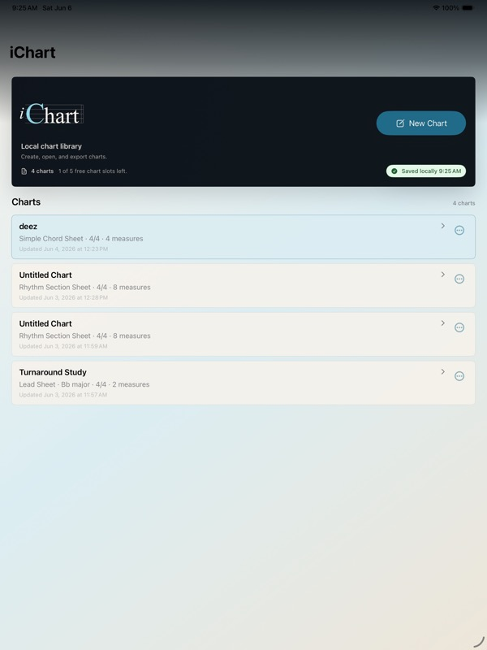

Maestro tighter B4.7B
iChart home logo comparison
Same home screen, palette, header, and layout. B4.8A-H1 is now the primary mark, with the italic i lifted into the high lead-in position.
home screen trial
High italic canon B4.8A-H1
